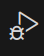
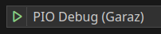
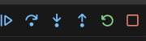
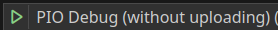

ESP-Prog jest programatorem i debuggerem do platformy ESP32.
Niniejszy dokument opisuje jak korzystać z tego urządzenia w systemie Linux z zainstalowanym edytorem Code wyposażonym w rozszerzenie PlatformIO.
Anatomia ESP-Prog
Płyta ESP-Prog jest wyposażona w dwa złącza służące do komunikacji z urządzeniem docelowym.

Złącze PROG służy do wgrania nowej wersji firmware’u na urządzenie docelowe, natomiast złącze JTAG umożliwia krokowe wykonanie programu, inspekcję pamięci urządzenia itp.
Do pinów złącz przypisane są następujące sygnały


Podłączenie obu interfejsów do urządzenia docelowego powoduje, że ESP-Prog przejmuje nad nim pełną kontrolę.
W takim podejściu jedynym urządzeniem komunikującym się z komputerem PC jest ESP-Prog.
W drugiej wersji konfiguracji z urządzeniem docelowym łączymy tylko sygnały ze złącza JTAG.
Do aktualizacji firmware’u wykorzystywany jest wtedy natywny interfejs urządzenia docelowego, natomiast złącze JTAG służy tylko i wyłącznie do kontroli wykonywanego kodu.
Na koniec kilka uwag nt. zasilania urządzenia docelowego.
Obok złącz znajdują się trójpinowe zworki.
Ich odpowiednie zwarcie ustawia żądany poziom napięcia na pinie VDD każdego ze złącz.
Napięcie 3.3V jest brane z wyjścia regulatora na ESP-Prog i może być połączone z pinem 3.3V na płycie docelowej.
Natomiast napięcie 5V pochodzi bezpośrednio ze złącza USB (sprzed regulatora) i musi być łączone z pinem 5V na płycie docelowej.
Zadanie stabilizacji napięcia 3.3V na płycie docelowej przejmie wtedy jej własny regulator.
Oczywiście, nie ma wtedy potrzeby łączenia 3.3V z ESP-Prog z płytą docelową.
Warto zauważyć, że łączenie napięć można zupełnie pominąć i zasilić urządzenie docelowe z niezależnego źródła np. ładowarki telefonu.
Oczywiście masy urządzeń powinny być obowiązkowo połączone.
Szczegółowy opis właściwości układu jest dostępny na jego stronie domowej [1].

Przygotowanie systemu Linux
Przygotowanie systemu przebiega dokładnie tak samo, jak w przypadku pracy z dowolnym mikrokontrolerem opartym o układ ESP32.
Po podłączeniu takiego mikrokontrolera w systemie pojawiają się urządzenia /dev/ttyUSBx, gdzie x należy zastąpić numerem kolejnego urządzenia.
Konfiguracja systemu sprowadza się do nadania praw dostępu do tych urządzeń nieuprzywilejowanym użytkownikom.
Dostęp dla wszystkich użytkowników
Instalacja odpowiednich reguł dla demona udev zapewnia dostęp world-wide do plików tworzonych przez sterowniki urządzeń USB o identyfikatorach przypisanych emulatorom łącza szeregowego.
curl -fsSL https://raw.githubusercontent.com/platformio/platformio-core/develop/platformio/assets/system/99-platformio-udev.rules | sudo tee /etc/udev/rules.d/99-platformio-udev.rules
sudo udevadm control --reload-rules
sudo udevadm trigger
Dostęp tylko dla wybranych użytkowników
Bardziej subtelna kontrola dostępu wykorzystuje mechanizm przynależności użytkowników systemu do odpowiednich grup.
Domyślnie pliki /dev/ttyUSBx mają prawa dostępu postaci 0660 i należą do root:dialup (Ubuntu) lub root:uucp (Arch) .
Zatem wyróżnionych użytkowników należy dodać do grupy umożliwiającej dostęp do plików urządzeń oraz grupy kontrolującej prawa dostępu do urządzeń dynamicznie łączonych z systemem
Ubuntu> sudo usermod -aG plugdev $USER ; sudo usermod -aG dialup $USER
Arch> sudo usermod -aG lock $USER ; sudo usermod -aG uucp $USER
Dodatkowe oprogramowanie
W dalszych rozważaniach będzie omawiana konfiguracja VS Code z rozszerzeniem PlatformIO, zatem instalacja tego oprogramowania jest niezbędna.
Podczas uruchamiania (debugowania) programów wykonywany jest kod .platformio/packages/toolchain-xtensa-esp32/bin/xtensa-esp32-elf-gdb, który wymaga biblioteki libpython2.7.so, co w normalnym języku oznacza, że konieczna jest instalacja Pythona w wersji 2.
W Ubuntu nie jest to problemem, natomiast Arch Linux w oficjalnych repozytoriach nie zawiera już tego oprogramowania. Jego instalacja wymaga otwarcia kanału z oprogramowaniem zarządzanym przez ochotników (tzw. kanał aur) i zbudowanie pakietu ze źródeł.
Działania te można bezproblemowo wykonać z poziomu standardowego zarządcy pakietów.
Konfiguracja Master-Slave
Rolę Master pełni ESP-Prog a urządzenie Slave zrealizowano jako ESP32 DevKitCv4.

Część sprzętowa
Połączenie złącza `PROG`` z ESP32
| device | connector | pin number | pin name | pin name | device |
|---|---|---|---|---|---|
| ESP-PROG | PROGRAM | 1 | ESP_EN | EN | ESP32 |
| ESP-PROG | PROGRAM | 2 | VDD | $3.3V/5V^*$ | ESP32 |
| ESP-PROG | PROGRAM | 3 | ESP_TXD | TX | ESP32 |
| ESP-PROG | PROGRAM | 4 | GND | GND | ESP32 |
| ESP-PROG | PROGRAM | 5 | ESP_RXD | RX | ESP32 |
| ESP-PROG | PROGRAM | 6 | ESP_IO0 | $GPIO 0^{**}$ | ESP32 |
$^*$ – zgodnie z napięciem wybranym na zworce przy złączu
$^{**}$ – tylko gdy zwarta jest zworka przy złączu
Połączenie złącza JTAG z ESP32
| device | connector | pin number | pin name | pin name | device |
|---|---|---|---|---|---|
| ESP-PROG | JTAG | 1 | VDD | $3.3V/5V^1$ | ESP32 |
| ESP-PROG | JTAG | 2 | ESP_TMS | GPIO 14 | ESP32 |
| ESP-PROG | JTAG | 3 | GND | GND | ESP32 |
| ESP-PROG | JTAG | 4 | ESP_TCK | GPIO 13 | ESP32 |
| ESP-PROG | JTAG | 6 | ESP_TDO | GPIO 15 | ESP32 |
| ESP-PROG | JTAG | 8 | ESP_TDI | GPIO 12 | ESP32 |
$^1$ – zgodnie z napięciem wybranym na zworce przy złączu
Uwaga!!!
Piny urządzenia docelowego wykorzystywane do komunikacji z ESP-Prog nie powinny być kontrolowane przez firmware urządzenia docelowego.
Ograniczenie to dotyczy nie tylko nowej wersji, ale również zastępowanego firmware’u. Gdy na urządzeniu docelowym jest zainstalowane nieznane oprogramowanie, to należy je zastąpić wersją spełniającą niniejszy wymóg korzystając ze standardowej metody aktualizacji.
Część programowa
Adaptacja pliku projektu
Niech pierwotna konfiguracja projektu w platform.ini ma postać
[env:esp32doit-devkit-v1]
board = esp32doit-devkit-v1
monitor_speed = 115200
platform = espressif32
framework = arduino
lib_deps =
ayushsharma82/AsyncElegantOTA@^2.2.7
esphome/AsyncTCP-esphome@^2.0.0
esphome/ESPAsyncWebServer-esphome@^3.0.0
Wystarczy do niej dopisać następujący fragment
...
[env:esp32doit-devkit-v1-debug]
extends = env:esp32doit-devkit-v1
debug_tool = esp-prog
debug_init_break = tbreak setup
[platformio]
default_envs = esp32doit-devkit-v1-debug
Sekcja [platformio] zapewnia, że nowa konfiguracja stanie się domyślną.
W nowej konfiguracji pierwotną wersję uzupełniono tylko dwoma wpisami: debug-tool określa rodzaj urządzenia wykorzystywanego do uruchamiania, natomiast postać debug_init_break ustawia punkt zatrzymania programu (breakpoint) na początku procedury setup.
Wgrywanie nowego firmware
Po prostu wystarczy wybrać opcję Upload, tak jak to zwykle się czyni.
Zielona dioda na ESP-Prog powinna zacząć mrugać sygnalizując proces wgrywania nowej wersji oprogramowania.
Procedura uruchamiania
Na panelu bocznym klikamy ikonę żuczka 
(skrót Ctrl-Alt-U) i ze spuszczanej listy wybieramy konfigurację PIO Debug, gdy chcemy zaktualizować firmware przed rozpoczęciem uruchamiania, lub PIO Debug (without uploading), gdy chcemy przejść bezpośrednio do procedury uruchamiania kodu zainstalowanego na urządzeniu docelowym.
Uruchamianie można zainicjować naciskając przycisk Play obok nazwy konfiguracji 
lub wykorzystując skrót klawiszowy F5.
Komunikacja z urządzeniem docelowym jest dość wolna.
Po chwili na ekranie powinno pojawić się menu debugera 
, które obsługujemy normalnie.
W oknie kodu źródłowego można ustawiać punkty przerwań wykonania programu, klikając po lewej stronie numeru linii.
Konfiguracja Remote Debug
Część sprzętowa
W tej konfiguracji zarówno urządzenie docelowe (DevKitCv4) jak i ESP-Prog połączone są z komputerem PC niezależnie.
W konfiguracji wykorzystywane jest tylko złącze JTAG do uruchamiania kodu działającego na urządzeniu docelowym (DevKitCv4).
Złącze PROG pozostaje niewykorzystane.
Nie ma potrzeby łączenia pinu VDD ponieważ każde urządzenie jest zasilane niezależnie.
Podłączenie każdego z urządzeń do komputera PC powoduje pojawienie się nowych plików urządzeń: DevKitC – jednego, ESP-Prog – dwóch.
Ich numeracja zależy od kolejności podłączania. Przyjmijmy, że DevKitC został podłączony jako pierwszy.
Firmware można do niego zatem wgrać za pomocą interfejsu /dev/ttyUSB0.
Podłączenie ESP-Prog powoduje pojawienie się w systemie dwóch kolejnych urządzeń: /dev/ttyUSB1 i /dev/ttyUSB2.
Adaptacja pliku projektu
Niech pierwotna konfiguracja projektu w platform.ini ma postać
[env:esp32doit-devkit-v1]
board = esp32doit-devkit-v1
monitor_speed = 115200
platform = espressif32
framework = arduino
lib_deps =
ayushsharma82/AsyncElegantOTA@^2.2.7
esphome/AsyncTCP-esphome@^2.0.0
esphome/ESPAsyncWebServer-esphome@^3.0.0
Wystarczy do niej dopisać następujący fragment
...
[env:esp32doit-devkit-v1-debug-standalone]
extends = env:esp32doit-devkit-v1
upload_port = /dev/ttyUSB0
upload_protocol = esptool
monitor_port = /dev/ttyUSB0
debug_tool = esp-prog
debug_init_break = tbreak setup
[platformio]
default_envs = esp32doit-devkit-v1-debug-standalone
Jak widać, zmiana w stosunku do poprzedniej metody uruchamiania polega jedynie na jawnej specyfikacji urządzenia wykorzystywanego do aktualizacji firmware’u i obserwacji konsoli szeregowej urządzenia.
Procedura uruchamiania
Na panelu bocznym klikamy ikonę żuczka
(skrót Ctrl-Alt-U) i ze spuszczanej listy wybieramy (koniecznie) PIO Debug (without uploading).
Następnie uruchamiany sesję debuggera wybierając przycisk Play 
lub skrót klawiszowy F5.
Reszta procedury przebiega identycznie jak w poprzednim przypadku.
Podsumowanie
ESP-Prog jest dedykowanym programatorem i debuggerem dedykowanym dla platformy ESP32. Oferuje on stabilne i wydajne rozwiązanie do programowania i debugowania układów ESP32. Jego najważniejsze zalety to:
-
Wsparcie dla JTAG i UART.
ESP-Progumożliwia zarówno debugowanie za pomocą interfejsu JTAG jak i programowanie z wykorzystaniem interfejsu UART. -
Debugowanie w czasie rzeczywistym: Dzięki
ESP-Progmożna wykonywać debugowanie w czasie rzeczywistym, co ułatwia identyfikację i rozwiązywanie problemów w kodzie podczas jego wykonywania na platformie ESP32. -
Łatwa integracja z PlatformIO:
ESP-Progjest dobrze zintegrowany z PlatformIO - popularnym narzędziem do rozwoju oprogramowania dla układów mikrokontrolerów. Umożliwia to wygodne i efektywne programowanie i debugowanie projektów ESP32 w środowisku PlatformIO, w szczególności w Visual Studio Code. -
Wsparcie dla różnych płytek deweloperskich:
ESP-Progjest kompatybilny z różnymi płytkami deweloperskimi ESP32, co oznacza, że można go używać z wieloma różnymi układami ESP32 bez konieczności zakupu wielu różnych programatorów.
Bibliografia
[1] https://docs.espressif.com/projects/espressif-esp-iot-solution/en/latest/hw-reference/ESP-Prog_guide.html